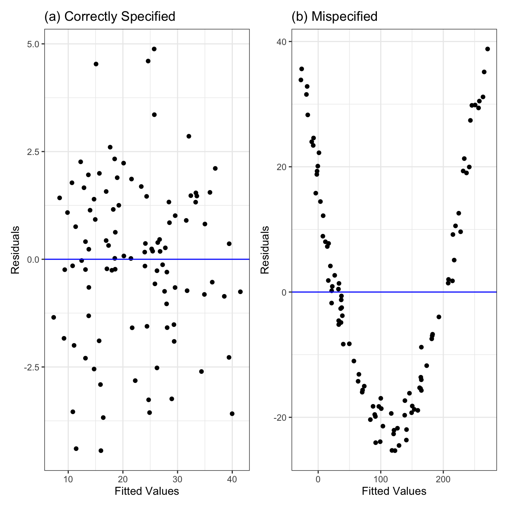
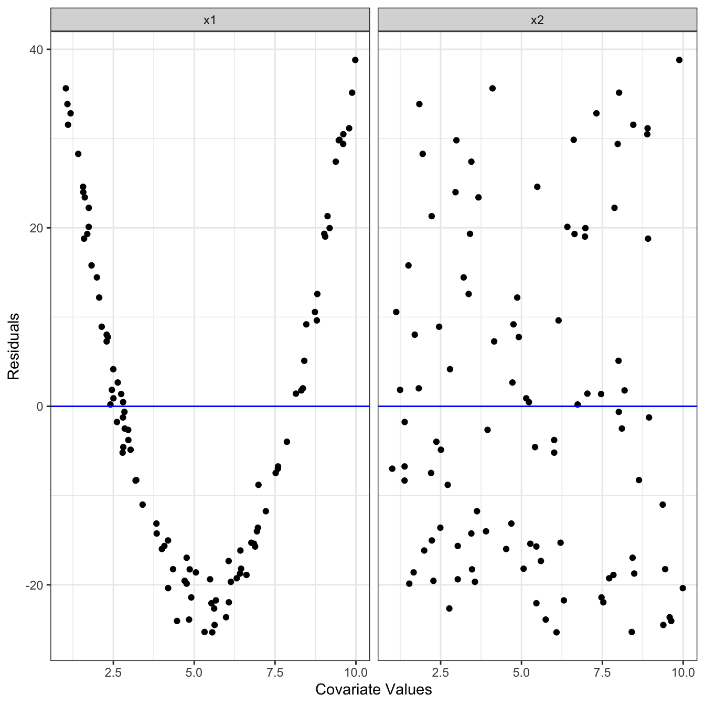
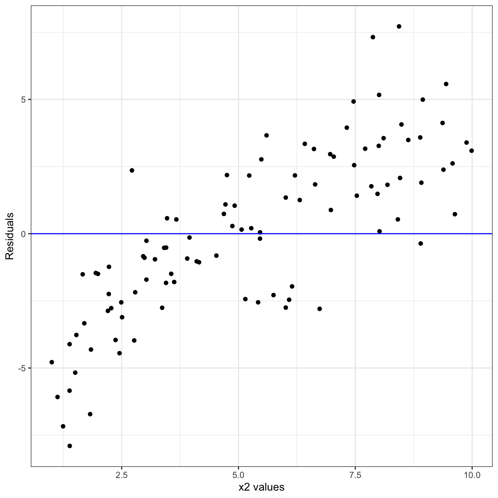
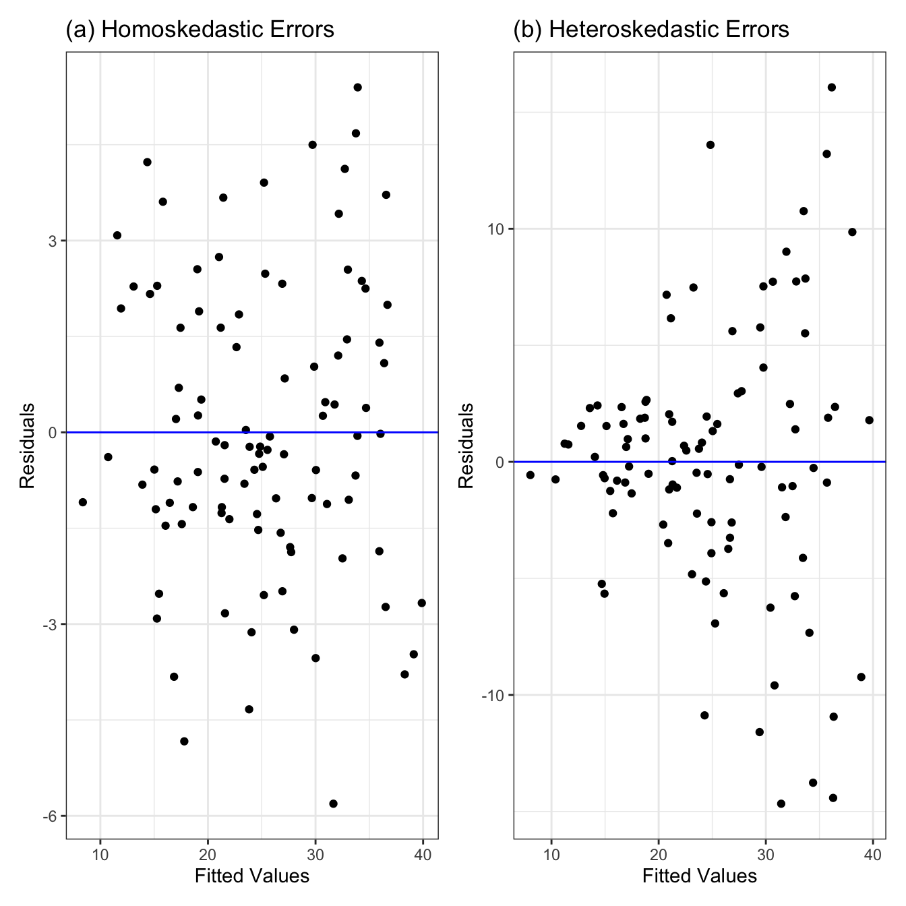
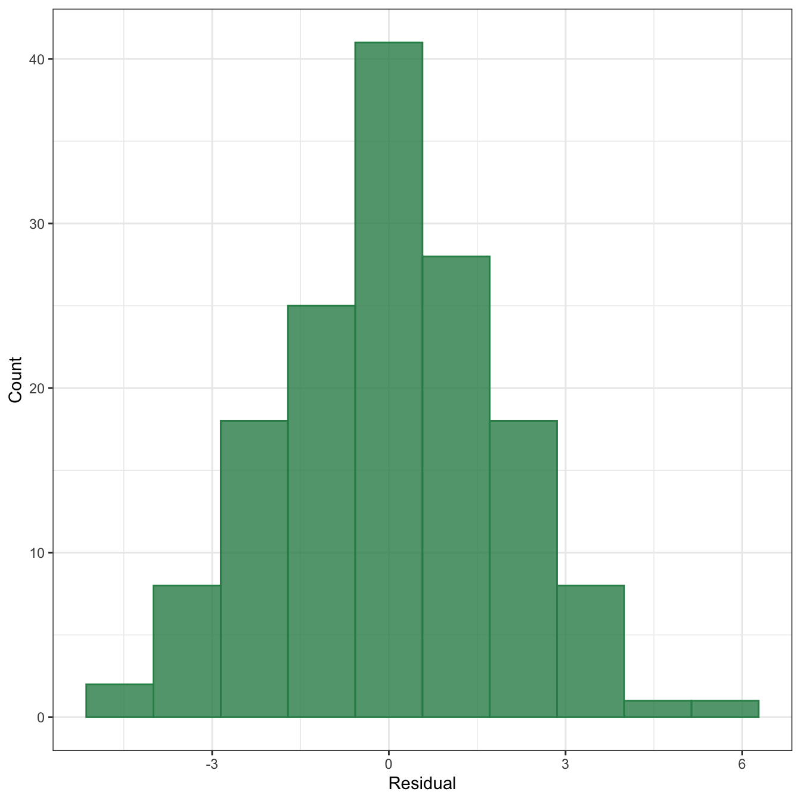
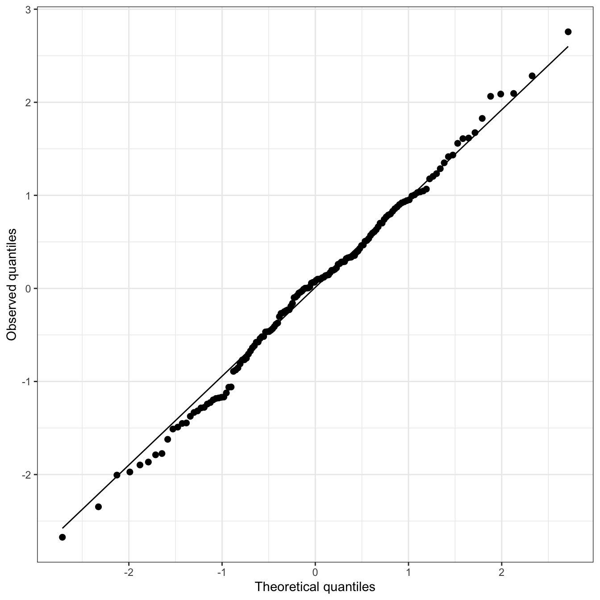

4 Linear Models
4.1 Setup
Simple linear regression describes the linear relationship between the outcome \(Y\) and a covariate of interest \(x\) (for simplicity, we will assume that the \(x\)’s are fixed and the \(Y\)’s are random variables). Under simple linear regression, we assume that for all units \(i = 1, \dots, n\):
\[ \begin{aligned} Y_i = \beta_0 + \beta_1 x_i + \epsilon_i \text{with }\epsilon_i \sim \text{Normal}(0, \sigma^2) \end{aligned} \tag{4.1}\]
The simple linear regression model given in Equation 4.1 can be extended in various ways. For example, we might want to include different powers of \(x\) (e.g., \(x, x^2, x^3, \dots\)) in the linear model. This is known as polynomial regression, which we discuss in more detail in Chapter 6.
Another natural extension is to include multiple covariates \(\mathbf{x} = (x_1, \dots, x_p)\), rather than just a single covariate, in the linear model. This is commonly referred to as multiple linear regression, which assumes that for all units \(i = 1, \dots, n\):
\[ Y_i = \beta_0 + \beta_1 x_{1i} + \cdots + \beta_p x_{pi} + \epsilon_i \quad \text{with } \epsilon_i \sim \text{Normal}(0, \sigma^2) \tag{4.2}\]
Thus, simple linear regression can be seen as a special case of multiple linear regression, where the number of covariates \(p = 1\). For simplicity, we refer to mulitple linear regression as linear regression.
4.2 Model Assumptions and Diagnostics
Per Equation 4.2, linear regression makes the following assumptions:
The error terms have mean zero: \(E[\epsilon_i] = 0\), or equivalently, the mean of \(Y_i\) is a linear function of \(\mathbf{x}_i\): \[ E[Y_i] = \beta_0 + \beta_1 x_{1i} + \dots + \beta_p x_{pi}. \]
The error terms have constant variance: \(\text{Var}[\epsilon_i] = \sigma^2\).
The error terms are independent of each other. That is, having information about an error term \(\epsilon_i\) does not tell us something about another error term \(\epsilon_j\).
The error terms are normally distributed: \(\epsilon_i \sim \text{Normal}(0, \sigma^2)\)
However, we cannot directly calculate the parameters \(\beta_0, \beta_1, \dots, \beta_p\), as we would need access to the entire population to do so. Instead, we estimate the parameters using our sample using our (random) sample \((\mathbf{x}, y)_{i = 1}^n\) from the population. We denote our sample estimates as: \(b_0, b_1, \dots, b_p\). So, our fitted linear model is:
\[ \hat{y}_i = b_0 + b_1 x_{1i} + \dots + b_p x_{pi}, \tag{4.3}\]
where \(\hat{y}_i\) denotes our predicted outcome for observation \(i\).
We can use the fitted linear model’s residuals (i.e., the observed errors) to assess assumptions (1)-(4). Residuals are the sample version of the error terms in Equation 4.2, and are defined as:
\[ \begin{aligned} e_i &= y_i - \hat{y}_i \\ &= y_i - (b_0 + b_1 x_{1i} + \dots + b_p x_{pi}) \end{aligned} \tag{4.4}\]
4.2.1 Mean Model Mispecification
Assumption (1) requires that the mean model of the outcome is linear with respect to the included covariates. If this assumption is violated, then the current linear model is not a good representation of the data-generating process.[[need to add influence on inference and/or predictions]]
There are two primary ways in which the mean model of the outcome may be misspecified in linear regression. First, some covariates may have a nonlinear relationship with the outcome that is not properly captured by the linear model. Second, the linear model may omit one or more important covariates that are associated with the outcome.
Nonlinearity: We can assess whether there is nonlinear relationship between the covariate and outcome by plotting the residuals against the fitted values. If the mean model is correctly specified, the points will be randomly scattered around zero, with no clear pattern. For example, the linear model producing the fitted vs. residual plot in Figure 4.1(a) is correctly specified since the points are randomly scattered around zero. In constrast, the linear model producing the fitted vs. residual plot in Figure 4.1(b) is misspecified, with the points following a quadratic trend.
We can evaluate where the misspecification occurs by plotting the residuals against each covariate. [[ADD DETAILS]]. Figure 4.2 shows that the mispecification occurs in \(\mathbf{x}_1\), and not \(\mathbf{x}_2\).

[[add blurb about how to fix]]
Missing covariates: We can also assess whether the linear model is missing are one or more important covariates using residuals. We can plot the values of any potential covariates not included in the linear model against the residuals to determine if that predictor should be added. For instance, suppose we have two covariates \(\mathbf{x}_1\) and \(\mathbf{x}_2\), but only include \(\mathbf{x}_1\) in our linear model. Figure 4.3 shows that the points in the plot of \(\mathbf{x}_2\) against the residuals have a linear trend. This suggests that our mean model is incorrectly specified; in particular, \(\mathbf{x}_2\) should be included in our linear model.

4.2.2 Non-Constant Error Variance
Assumption (2) of linear regression is that the error terms have constant variance. If the error variance is constant, we say that the errors are called homoskedastic. Meanwhile, the errors are called heteroskedastic if they have non-constant variance.[[need to add influence on inference and/or predictions]]
Like for mean model misspecification, we can use the fitted values versus residuals plot to determine whether the constant error variance assumption is satisfied. Under constant error variance, we expect for the variance of the residuals to be approximately constant across the fitted values. [[explain figure]]

There are various ways to correct for error heteroskedasticity. One approach is to transform the outcome to stablize the variance. [[add how this would be done and what are some covariates of this]]. Alternatively, [[weighted regression]]. A third approach is to use the sandwich estimator to estimate the variance of our parameter estimates. We show how to compute the sandwich estimator in R in [[ADD SECTION]].
4.2.3 Non-Normality of Errors
Assumption (4) requires that the errors are normally distributed. If this assumption holds, then the sampling distribution of our parameter estimates will be normally distributed; so, we can use standard procedures for obtain valid confidence intervals and \(p\)-values [[need to explain more what these are]]. On the other hand, if assumptions (1)-(3) hold, but assumption (4) does not, the linear model is still perfectly valid – we just cannot “trust” the estimated uncertainties on the coefficients and associated \(p\)-values; in other words, inference is affected, but not prediction. However, an important caveat to this is that if the number of observations is sufficiently large [[add heuristic of what this is]], the sampling distribution of our parameter estimates will be approximately normally distribution even if the errors are not normally distributed [[footnote to CLT]]. Therefore, assumption (4) is “optional” if (i) we have a small number of observations but only care about prediction, not inference, or (ii) we have a sufficiently large number of observations in our sample.
We can assess whether the errors are normally distributed by plotting a histogram of the residuals. Figure 4.5 shows an example of the histogram of the residuals, where the error terms are normally distributed. We can see that the residuals appear to be roughly normally distributed.

We can formally test whether the residuals follow a normal distribution using the Shapiro-Wilk test. The null hypothesis (\(H_0\)) of the Shapiro-Wilk test is the data is normally distributed, and the alternative hypothesis (\(H_1\)) is that the data are not normally distributed. If we obtain a \(p\)-value less than our pre-specified cut-off (e.g., \(p < 0.05\)), then we reject the null hypothesis that the data are normally distributed. If the \(p\)-value is greater than our pre-specified cut-off we fail to reject the null hypothesis that the data are normally distributed.
y.hat <- predict(fit)
e <- df$y - y.hat
shapiro.test(e)$p.value[1] 0.9099408[[shapiro wilk test example in R]]
Another option to check for non-normal errors is to use a QQ-plot (i.e., a Quantile-Quantile plot). In particular, we can plot the observed quantiles of the standardized residuals against the theoretical quantiles of a normal distribution with mean zero and variance one [[need to better introduce standardized residuals]]. If the errors are normally distributed, we expect observed quantiles of standardized residuals to approximately follow the theoretical quantiles of a normal distribution with mean zero and variance one. Figure 4.6 shows the QQ-plot, in which the residuals are simulated to be normally distributed. While the observed standardized residuals quantiles appear to deviate a bit from the theoretical quantiles of the normal distribution (particularly in the upper and lower quantiles), these deviations are relatively small. This indicates that the assumption of the errors being normally distributed is satisfied.

4.3 Outliers
4.4 Multiollinearity
4.4.1 Variance Inflation Factor
The variance inflation factor, or vif, is the factor by which the estimated variance for a coefficient is inflated due to multicollinearity. If a vif value is high, then the coefficient estimate for that variable obtained from the lm() function can be much more uncertain than R indicates.
Example: Suppose we have the following fitted model:
\[ \hat{Y} = 5 + 4 x_1 - 2 x_2, \]
then, \(b_0 = 5, b_1 = 4\), and \(b_2 = -2\). Let the estimated standard errors for \(b_1\) and \(b_2\) both be 2, and the vifs for \(b_1\) and \(b_2\) be \(4\) and \(9\), respectively. This information is summarized in Table 4.1.
| Coefficient estimate | Standard Error estimate | vif |
|---|---|---|
| 4 | 2 | 4 |
| -2 | 2 | 9 |
Since the vif value is the factor by which the estimated variance is inflated, multiplying the estimated standard error by the square-root of the vif value gives us the actual standard error estimates for \(b_1\) and \(b_2\):1
The actual standard error estimate for \(b_1\): \(2 \times \sqrt{4} = 4\)
The actual standard error estimate for \(b_2\): \(2 \times \sqrt{9} = 6\).
A typical rule-of-thumb is to worry if vif values are above 5 (more conservative) or 10 (less conservative). One mitigation strategy is to remove one variable at a time until the vif values for the remaining covariates fall below 5 or 10. However, this can lead to [[post-selection problems?]]. Moreover, removing covariates can adversely affect the linear model’s predictive abilities. Thus, common alternative approaches include performing ridge regression or principal components regression. [[I think it would be best to include more details of these in other chapters]].
Recall that the standard error of an estimate is the square-root of its variance.↩︎